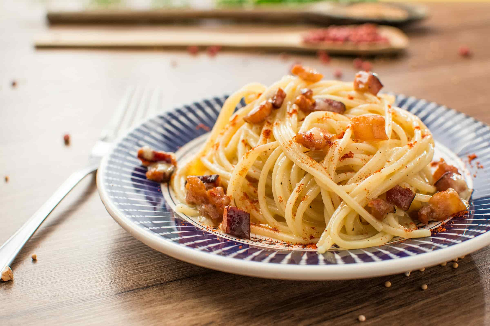
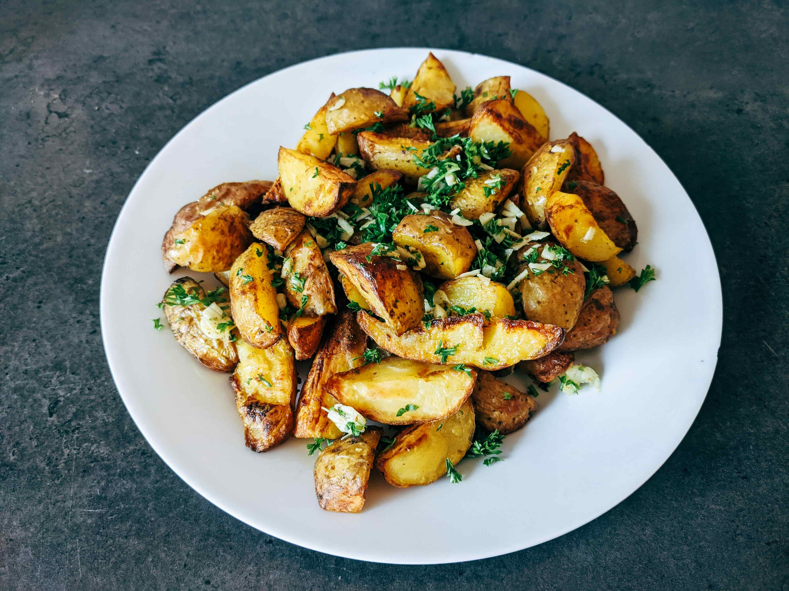

Rezeptliste

Spaghetti Carbonara
- Spaghetti in reichlich Salzwasser al dente kochen.
- Speck in einer Pfanne knusprig anbraten.
- Eier mit geriebenem Parmesan und Pfeffer verquirlen.
- Spaghetti abgießen, mit Speck mischen und Pfanne vom Herd nehmen.
- Eimischung unterrühren und sofort servieren.

Vegetarische Gemüsepfanne
- Gemüse (z.B. Paprika, Zucchini, Karotten) klein schneiden.
- Öl in einer großen Pfanne erhitzen.
- Gemüse darin anbraten und gelegentlich umrühren.
- Mit Salz, Pfeffer und Kräutern würzen.
- Nach ca. 10 Minuten servieren.
Tomatensuppe
- Zwiebel und Knoblauch fein hacken und in einem Topf mit etwas Öl anschwitzen.
- Tomaten (frisch oder aus der Dose) hinzufügen und kurz mitdünsten.
- Mit Gemüsebrühe ablöschen und ca. 15 Minuten köcheln lassen.
- Mit Salz, Pfeffer und Kräutern würzen, dann pürieren.
- Mit einem Klecks Sahne servieren.
Pfannkuchen
- Mehl, Milch, Eier und eine Prise Salz zu einem glatten Teig verrühren.
- Etwas Butter in einer Pfanne erhitzen.
- Eine Kelle Teig in die Pfanne geben und goldbraun ausbacken.
- Pfannkuchen wenden und die andere Seite ebenfalls braten.
- Nach Belieben süß oder herzhaft füllen und servieren.

Ofenkartoffeln
- Kartoffeln gründlich waschen und halbieren.
- Mit Olivenöl, Salz, Pfeffer und Rosmarin vermengen.
- Auf ein Backblech legen und bei 200°C ca. 35 Minuten backen.
- Mit frischem Kräuterquark servieren.
- Nach Belieben mit Frühlingszwiebeln garnieren.

Hähnchen-Curry
- Hähnchenbrust in Würfel schneiden und in Öl anbraten.
- Zwiebel und Knoblauch fein hacken, kurz mitbraten.
- Curry-Pulver und Tomatenmark zugeben, kurz rösten.
- Kokosmilch angießen und ca. 15 Minuten köcheln lassen.
- Mit Reis servieren und mit Koriander bestreuen.